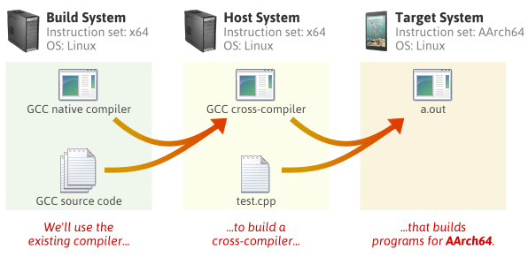
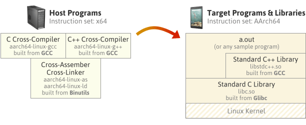

GCC is not just a compiler. It’s an open source project that lets you build all kinds of compilers. Some compilers support multithreading; some support shared libraries; some support multilib. It all depends on how you configure the compiler before building it.
This guide will demonstrate how to build a cross-compiler, which is a compiler that builds programs for another machine. All you need is a Unix-like environment with a recent version of GCC already installed.

In this guide, I’ll use Debian Linux to build a full C++ cross-compiler for AArch64, a 64-bit instruction set available in the latest ARM processors. I don’t actually own an AArch64 device – I just wanted an AArch64 compiler to verify this bug.
Required Packages
Starting with a clean Debian system, you must first install a few packages:
$ sudo apt-get install g++ make gawk
Everything else will be built from source. Create a new directory somewhere, and download the following source packages. (If you’re following this guide at a later date, there will be more recent releases of each package available. Check for newer releases by pasting each URL into your browser without the filename. For example: http://ftpmirror.gnu.org/binutils/)
$ wget http://ftpmirror.gnu.org/binutils/binutils-2.24.tar.gz
$ wget http://ftpmirror.gnu.org/gcc/gcc-4.9.2/gcc-4.9.2.tar.gz
$ wget https://www.kernel.org/pub/linux/kernel/v3.x/linux-3.17.2.tar.xz
$ wget http://ftpmirror.gnu.org/glibc/glibc-2.20.tar.xz
$ wget http://ftpmirror.gnu.org/mpfr/mpfr-3.1.2.tar.xz
$ wget http://ftpmirror.gnu.org/gmp/gmp-6.0.0a.tar.xz
$ wget http://ftpmirror.gnu.org/mpc/mpc-1.0.2.tar.gz
$ wget ftp://gcc.gnu.org/pub/gcc/infrastructure/isl-0.12.2.tar.bz2
$ wget ftp://gcc.gnu.org/pub/gcc/infrastructure/cloog-0.18.1.tar.gz
The first four packages – Binutils, GCC, the Linux kernel and Glibc – are the main ones. We could have installed the next three packages in binary form using our system’s package manager instead, but that tends to provide older versions. The last two packages, ISL and CLooG, are optional, but they enable a few more optimizations in the compiler we’re about to build.
How The Pieces Fit Together
By the time we’re finished, we will have built each of the following programs and libraries. First, we’ll build the tools on the left, then we’ll use those tools to build the programs and libraries on the right. We won’t actually build the target system’s Linux kernel, but we do need the kernel header files in order to build the target system’s standard C library.

The compilers on the left will invoke the assembler & linker as part of their job. All the other packages we downloaded, such as MPFR, GMP and MPC, will be linked into the compilers themselves.
The diagram on the right represents a sample program, a.out, running on the target OS, built using the cross compiler and linked with the target system’s standard C and C++ libraries. The standard C++ library makes calls to the standard C library, and the C library makes direct system calls to the AArch64 Linux kernel.
Note that instead of using Glibc as the standard C library implementation, we could have used Newlib, an alternative implementation. Newlib is a popular C library implementation for embedded devices. Unlike Glibc, Newlib doesn’t require a complete OS on the target system – just a thin hardware abstraction layer called Libgloss. Newlib doesn’t have regular releases; instead, you’re meant to pull the source directly from the Newlib CVS repository. One limitation of Newlib is that currently, it doesn’t seem to support building multithreaded programs for AArch64. That’s why I chose not to use it here.
Build Steps
Extract all the source packages.
$ for f in *.tar*; do tar xf $f; done
Create symbolic links from the GCC directory to some of the other directories. These five packages are dependencies of GCC, and when the symbolic links are present, GCC’s build script will build them automatically.
$ cd gcc-4.9.2
$ ln -s ../mpfr-3.1.2 mpfr
$ ln -s ../gmp-6.0.0 gmp
$ ln -s ../mpc-1.0.2 mpc
$ ln -s ../isl-0.12.2 isl
$ ln -s ../cloog-0.18.1 cloog
$ cd ..
Choose an installation directory, and make sure you have write permission to it. In the steps that follow, I’ll install the new toolchain to /opt/cross.
$ sudo mkdir -p /opt/cross
$ sudo chown jeff /opt/cross
Throughout the entire build process, make sure the installation’s bin subdirectory is in your PATH environment variable. You can remove this directory from your PATH later, but most of the build steps expect to find aarch64-linux-gcc and other host tools via the PATH by default.
$ export PATH=/opt/cross/bin:$PATH
Pay particular attention to the stuff that gets installed under /opt/cross/aarch64-linux/. This directory is considered the system root of an imaginary AArch64 Linux target system. A self-hosted AArch64 Linux compiler could, in theory, use all the headers and libraries placed here. Obviously, none of the programs built for the host system, such as the cross-compiler itself, will be installed to this directory.
1. Binutils
This step builds and installs the cross-assembler, cross-linker, and other tools.
$ mkdir build-binutils
$ cd build-binutils
$ ../binutils-2.24/configure --prefix=/opt/cross --target=aarch64-linux --disable-multilib
$ make -j4
$ make install
$ cd ..
- We’ve specified
aarch64-linuxas the target system type. Binutils’sconfigurescript will recognize that this target is different from the machine we’re building on, and configure a cross-assembler and cross-linker as a result. The tools will be installed to/opt/cross/bin, their names prefixed byaarch64-linux-. --disable-multilibmeans that we only want our Binutils installation to work with programs and libraries using the AArch64 instruction set, and not any related instruction sets such as AArch32.
2. Linux Kernel Headers
This step installs the Linux kernel header files to /opt/cross/aarch64-linux/include, which will ultimately allow programs built using our new toolchain to make system calls to the AArch64 kernel in the target environment.
$ cd linux-3.17.2
$ make ARCH=arm64 INSTALL_HDR_PATH=/opt/cross/aarch64-linux headers_install
$ cd ..
- We could even have done this before installing Binutils.
- The Linux kernel header files won’t actually be used until step 6, when we build the standard C library, although the
configurescript in step 4 expects them to be already installed. - Because the Linux kernel is a different open-source project from the others, it has a different way of identifying the target CPU architecture:
ARCH=arm64
All of the remaining steps involve building GCC and Glibc. The trick is that there are parts of GCC which depend on parts of Glibc already being built, and vice versa. We can’t build either package in a single step; we need to go back and forth between the two packages and build their components in a way that satisfies their dependencies.

3. C/C++ Compilers
This step will build GCC’s C and C++ cross-compilers only, and install them to /opt/cross/bin. It won’t invoke those compilers to build any libraries just yet.
$ mkdir -p build-gcc
$ cd build-gcc
$ ../gcc-4.9.2/configure --prefix=/opt/cross --target=aarch64-linux --enable-languages=c,c++ --disable-multilib
$ make -j4 all-gcc
$ make install-gcc
$ cd ..
- Because we’ve specified
--target=aarch64-linux, the build script looks for the Binutils cross-tools we built in step 1 with names prefixed byaarch64-linux-. Likewise, the C/C++ compiler names will be prefixed byaarch64-linux-. --enable-languages=c,c++prevents other compilers in the GCC suite, such as Fortran, Go or Java, from being built.
4. Standard C Library Headers and Startup Files
In this step, we install Glibc’s standard C library headers to /opt/cross/aarch64-linux/include. We also use the C compiler built in step 3 to compile the library’s startup files and install them to /opt/cross/aarch64-linux/lib. Finally, we create a couple of dummy files, libc.so and stubs.h, which are expected in step 5, but which will be replaced in step 6.
$ mkdir -p build-glibc
$ cd build-glibc
$ ../glibc-2.20/configure --prefix=/opt/cross/aarch64-linux --build=$MACHTYPE --host=aarch64-linux --target=aarch64-linux --with-headers=/opt/cross/aarch64-linux/include --disable-multilib libc_cv_forced_unwind=yes
$ make install-bootstrap-headers=yes install-headers
$ make -j4 csu/subdir_lib
$ install csu/crt1.o csu/crti.o csu/crtn.o /opt/cross/aarch64-linux/lib
$ aarch64-linux-gcc -nostdlib -nostartfiles -shared -x c /dev/null -o /opt/cross/aarch64-linux/lib/libc.so
$ touch /opt/cross/aarch64-linux/include/gnu/stubs.h
$ cd ..
--prefix=/opt/cross/aarch64-linuxtells Glibc’sconfigurescript where it should install its headers and libraries. Note that it’s different from the usual--prefix.- Despite some contradictory information out there, Glibc’s
configurescript currently requires us to specify all three--build,--hostand--targetsystem types. $MACHTYPEis a predefined environment variable which describes the machine running the build script.--build=$MACHTYPEis needed because in step 6, the build script will compile some additional tools which run as part of the build process itself.--hosthas a different meaning here than we’ve been using so far. In Glibc’sconfigure, both the--hostand--targetoptions are meant to describe the system on which Glibc’s libraries will ultimately run.- We install the C library’s startup files,
crt1.o,crti.oandcrtn.o, to the installation directory manually. There’s doesn’t seem to amakerule that does this without having other side effects.
5. Compiler Support Library
This step uses the cross-compilers built in step 3 to build the compiler support library. The compiler support library contains some C++ exception handling boilerplate code, among other things. This library depends on the startup files installed in step 4. The library itself is needed in step 6. Unlike some other guides, we don’t need to re-run GCC’s configure. We’re just building additional targets in the same configuration.
$ cd build-gcc
$ make -j4 all-target-libgcc
$ make install-target-libgcc
$ cd ..
- Two static libraries,
libgcc.aandlibgcc_eh.a, are installed to/opt/cross/lib/gcc/aarch64-linux/4.9.2/. - A shared library,
libgcc_s.so, is installed to/opt/cross/aarch64-linux/lib64.
6. Standard C Library
In this step, we finish off the Glibc package, which builds the standard C library and installs its files to /opt/cross/aarch64-linux/lib/. The static library is named libc.a and the shared library is libc.so.
$ cd build-glibc
$ make -j4
$ make install
$ cd ..
7. Standard C++ Library
Finally, we finish off the GCC package, which builds the standard C++ library and installs it to /opt/cross/aarch64-linux/lib64/. It depends on the C library built in step 6. The resulting static library is named libstdc++.a and the shared library is libstdc++.so.
$ cd build-gcc
$ make -j4
$ make install
$ cd ..
Dealing with Build Errors
If you encounter any errors during the build process, there are three possibilities:
- You’re missing a required package or tool on the build system.
- You’re attempting to perform the build steps in an incorrect order.
- You’ve done everything right, but something is just broken in the configuration you’re attempting to build.
You’ll have to examine the build logs to determine which case applies. GCC supports a lot of configurations, and some of them may not build right away. The less popular a configuration is, the greater the chance of it being broken. GCC, being an open source project, depends on contributions from its users to keep each configuration working.
Automating the Above Steps
I’ve written a small bash script named build_cross_gcc to perform all of the above steps. You can find it on GitHub. On my Core 2 Quad Q9550 Debian machine, it takes 13 minutes from start to finish. Customize it to your liking before running.
build_cross_gcc also supports Newlib configurations. When you build a Newlib-based cross-compiler, steps 4, 5 and 6 above can be combined into a single step. (Indeed, that’s what many existing guides do.) For Newlib support, edit the script options as follows:
TARGET=aarch64-elf
USE_NEWLIB=1
CONFIGURATION_OPTIONS="--disable-multilib --disable-threads"
Another way to build a GCC cross-compiler is using a combined tree, where the source code for Binutils, GCC and Newlib are merged into a single directory. A combined tree will only work if the intl and libiberty libraries bundled with GCC and Binutils are identical, which is not the case for the versions used in this post. Combined trees don’t support Glibc either, so it wasn’t an option for this configuration.
There are a couple of popular build scripts, namely crosstool-NG and EmbToolkit, which automate the entire process of building cross-compilers. I had mixed results using crosstool-NG, but it helped me make sense of the build process while putting together this guide.
Testing the Cross-Compiler
If everything built successfully, let’s check our cross-compiler for a dial tone:
$ aarch64-linux-g++ -v
Using built-in specs.
COLLECT_GCC=aarch64-linux-g++
COLLECT_LTO_WRAPPER=/opt/cross/libexec/gcc/aarch64-linux/4.9.2/lto-wrapper
Target: aarch64-linux
Configured with: ../gcc-4.9.2/configure --prefix=/opt/cross --target=aarch64-linux --enable-languages=c,c++ --disable-multilib
Thread model: posix
gcc version 4.9.2 (GCC)
We can compile the C++14 program from the previous post, then disassemble it:
$ aarch64-linux-g++ -std=c++14 test.cpp
$ aarch64-linux-objdump -d a.out
...
0000000000400830 <main>:
400830: a9be7bfd stp x29, x30, [sp,#-32]!
400834: 910003fd mov x29, sp
400838: 910063a2 add x2, x29, #0x18
40083c: 90000000 adrp x0, 400000 <_init-0x618>
...
This was my first foray into building a cross-compiler. I basically wrote this guide to remember what I’ve learned. I think the above steps serve as a pretty good template for building other configurations; I used build_cross_gcc to build TARGET=powerpc-eabi as well. You can browse config.sub from any of the packages to see what other target environments are supported. Comments and corrections are more than welcome!